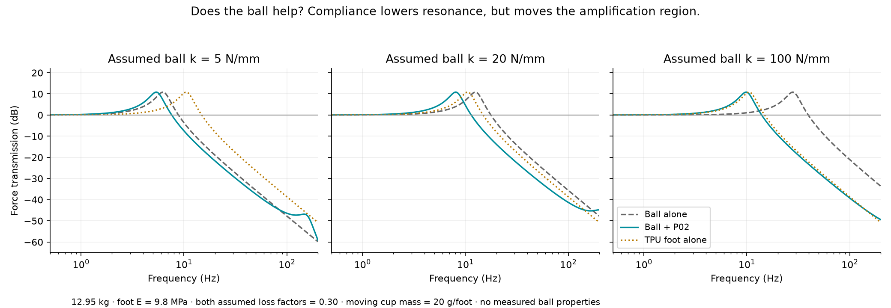
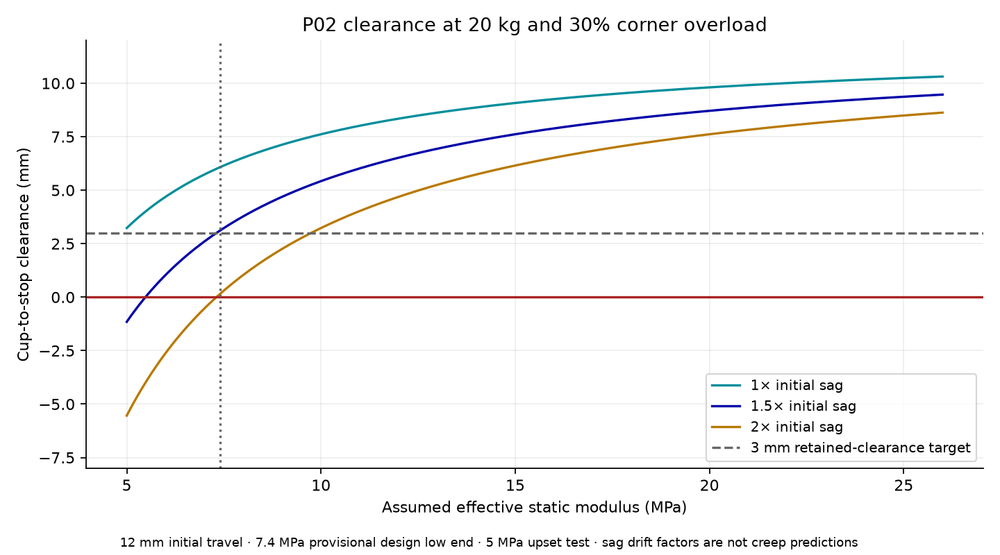
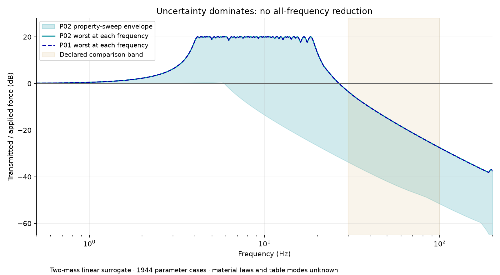

P01 REVIEW → P02 · SEPTEMBER 24, 2026
Less force into the table.
More room to settle.
The target is table/floor vibration. The revised foot adds 3 mm of travel and removes the original directional stiffness imbalance. Ball compliance helps above resonance, but no passive suspension reduces transmission at every frequency.
No measured noise-reduction claim. These are beam and lumped-mass estimates. Force-transmission dB is not microphone dB. The ball, TPU, corner loads and table have not been measured. P02 is a prototype with a calculated clearance reserve.
01 / THE REVIEW RESULT
BENEFITS AND LIMITS- The mixed ribs did not create independent frequency filters. P01's horizontal principal stiffnesses were 11.31 and 16.79 N/mm: a 48% difference. Six identical ribs give approximately 13.66 N/mm in both directions. This reduces the stiffest direction, while increasing the softest.
- Keep the extra 3 mm as settling reserve. Travel increases from 9 to 12 mm. With the low-stiffness, heavily loaded corner and 1.5× assumed sag, P02 retains 3.11 mm before the catch stop.
- There is no meaningful overall transmission gain over P01 in this constrained comparison. The worst-case 30–100 Hz integrated score changes by +0.02 dB, slightly worse and negligible relative to model uncertainty. Clearance and uniformity are the practical improvements.
- The ball is worth retaining for the prototype. Its series compliance lowers the primary resonance in the modeled cases. Its actual loaded stiffness, damping and contact geometry will determine the benefit.
P02 uses six 20° curved ribs, 4.0 mm wide × 8.8 mm deep, with the base seat at 17 mm. The TPU envelope is 80 × 32.3 mm; including the full ball, the unloaded height is 59 mm. The two pieces remain designed for flat, support-free printing.
02 / DOES THE BALL HELP?
YES IN SOME BANDS; NOT AUTOMATICALLY EVERYWHERETwo compliant elements in series satisfy 1/k_total = 1/k_ball + 1/k_foot when intermediate inertia is negligible. A softer combined suspension usually starts isolating at a lower frequency. If the ball is already much softer than the foot, however, it dominates compliance and the TPU adds less. The curves include a small moving cup mass to expose a possible second resonance.
{kind=link}

For one illustrative 50 Hz comparison: 12.95 kg, foot modulus 9.8 MPa, 20 g moving cup mass per foot, and material loss factor 0.30 for both elements:
| Assumed ball stiffness | Adding ball to TPU foot | Adding TPU foot to balls alone |
|---|---|---|
| 5 N/mm | -11.1 dB | -1.8 dB |
| 20 N/mm | -4.3 dB | -7.5 dB |
| 100 N/mm | -1.1 dB | -20.8 dB |
Negative numbers mean lower transmitted force in that hypothetical case. These are not predicted sound-level savings. Near the new resonance the combined system can transmit more, and its extra moving mass introduces another mode. Thus “the ball must help” is a useful design hypothesis, not an all-frequency guarantee.
03 / LOW-STIFFNESS CLEARANCE
20 KG · 30% EXTRA CORNER LOADThe design constraint is at least 3 mm remaining from 12 mm travel after multiplying immediate sag by 1.5. At a provisional 7.4 MPa low end, this requires reference stiffness of at least 14.07 N/mm at 9.8 MPa. P02 calculates to 14.25 N/mm. A small numerical headroom avoids choosing a boundary that disappears on mesh refinement; it is not a manufacturing safety factor.
| Static modulus | Initial cup sag | Initial clearance | Clearance at 1.5× sag | Result |
|---|---|---|---|---|
| 5 MPa | 8.77 mm | 3.23 mm | -1.15 mm | Below target |
| 7.4 MPa | 5.92 mm | 6.08 mm | 3.11 mm | Passes linear screen |
| 9.8 MPa | 4.47 mm | 7.53 mm | 5.29 mm | Passes linear screen |
| 15 MPa | 2.92 mm | 9.08 mm | 7.62 mm | Passes linear screen |
| 26 MPa | 1.69 mm | 10.31 mm | 9.47 mm | Passes linear screen |
{kind=link}

Two limits matter. 7.4 MPa is not a guaranteed lower bound for an unidentified filament. At 5 MPa, this design fails the 1.5× sag reserve. Also, the severe 7.4 MPa case predicts roughly 22% nominal bending strain: too large to treat a linear beam estimate as clearance proof. A printed load test is essential.
At 5 MPa, the same ribs would need approximately 21.16 mm seat height (36.49 mm total TPU height), or approximately 11 mm-deep ribs at the current seat, to recover the same linear clearance target. The former consumes more height; the latter raises resonance. These alternatives are sizing results, not additional validated downloads.
Would using more of the height allowance help?
Yes, in the model. A 39.3 mm TPU envelope permits 19 mm travel. At the same 7.4 MPa low end and drift allowance, the required reference stiffness drops from 14.07 to about 7.91 N/mm. That permits a substantially softer suspension. It also places the ball top at 66 mm unloaded and increases available rocking motion. P02 implements the requested exact +3 mm travel; the taller option remains a documented tradeoff.
04 / SWEEP THE FREQUENCIES AND MATERIAL ASSUMPTIONS
{kind=link}

Static force transmission tends to one: the feet must support the weight. A passive spring system can amplify around resonance before attenuating higher frequencies. Damping changes the peak and the high-frequency response; “more damping” is not an unconditional optimum. Newport explains this tradeoff.
The sweep includes static TPU moduli 7.4, 9.8, 15 and 26 MPa; dynamic/static stiffness ratios 1, 1.5 and 2; two total masses; independent vertical ball stiffnesses 5/20/100 N/mm and lateral stiffnesses 1/5/20 N/mm; and separate ball/foot loss factors 0.10/0.30/0.60. Except for manufacturer reference values, these are declared hypothetical inputs. The 5 MPa case is an additional clearance upset test.
Above the first local flexible-part modes, a two-mass model becomes inadequate. No claim is made for unmodeled frequencies, a flexible table's resonances, contact impacts or airborne sound. A force spectrum measured during actual printing is needed to choose the most useful optimization band.
Rocking still needs attention
An exploratory six-degree-of-freedom printer model has low coupled sway/rocking modes around 2–5 Hz. The calculation assumes 320 mm square foot spacing, a center of mass 230 mm above the supports and uniform box inertia. Those are illustrative inputs, not measured P1S mass properties. Gravity's destabilizing rotational stiffness is included.
| Assumed ball vertical / lateral stiffness | P02 hypothetical six rigid-body modes |
|---|---|
| 5 / 1 N/mm | 2.07, 2.07, 3.85, 5.38, 6.21, 6.21 Hz |
| 20 / 5 N/mm | 3.58, 3.58, 7.63, 8.07, 10.94, 10.94 Hz |
| 100 / 20 N/mm | 4.69, 4.69, 9.88, 11.36, 15.31, 15.31 Hz |
05 / METHOD AND REPRODUCIBILITY
The review extends P01's vertical beam model to a full 3D frame, including bending, axial deformation, transverse shear and torsion. Internal rib nodes are condensed to a rigid cup. The ball is approximated as transmitting forces without moments for the horizontal stiffness calculation. The frequency model then places ball and TPU springs in series with printer and cup masses.
3,444 designs were screened over 18–40° rib sweep, 2.8–5.2 mm width and 6–14 mm depth. The 63 first-feasible designs for those families were spectrally compared. The declared objective minimizes worst-case integrated transmitted-force power over 30–100 Hz, assuming equal uncorrelated forcing in X/Y/Z. It is a constrained, discrete-model selection, not a proven global optimum for every frequency or printer motion.
Verification and important modeling limits
- The 3D implementation agrees with the independently implemented P01 vertical solver.
- Axial and both bending directions match analytical straight cantilever solutions; the original solver also matches a fixed-guided Timoshenko beam.
- Centerline mesh refinement is checked. Final P02 vertical calculation uses 80 segments per rib and compares 160.
- The two-mass transfer reduces to the exact massless series-spring solution when cup mass is zero, and has unit static transmission.
- CAD exports are valid single solids; both STL meshes are connected, watertight and correctly oriented on the bed. The unloaded assembly has no unintended overlap.
- Short, thick curved ribs and large strains limit beam-model accuracy. Real cup/base flexibility, layer anisotropy, nonlinear rubber behavior, joint motion and creep are excluded.
- The frame, two-mass and rigid-printer models are complementary approximations, not one validated coupled solid simulation. No nonlinear solid FEA, slicer simulation, print test or vibration measurement is claimed.
Reference material inputs: Bambu TPU 95A HF, NinjaTek Cheetah 95A. Printer reference mass: Bambu P1S specification. Shore hardness alone does not identify the effective modulus of a printed rib.
06 / THE NEXT USEFUL EXPERIMENT
ONE FOOT FIRST- Measure corner load and clearance. Load through the real ball; record cup underside height unloaded and after 1 minute, 1 hour and 24 hours. Keep at least 3 mm clearance after settling. This is an initial test target, not a lifetime guarantee.
- Measure the two springs separately. Small load increments around the operating load estimate tangent stiffness. Measure cup displacement for the TPU, and ball compression relative to that moving cup. Whole-load secant stiffness is not automatically dynamic stiffness.
- Compare balls alone with balls + P02. Repeat the same printer motion, fan state and table placement. Compare table/floor acceleration spectra and inspect printer rocking and print quality. Keep the sensor mount consistent.
- Inspect bypasses. A loaded stop, touching upper holder, shifting gravity-seated rim, taut cables or printer/table contact can defeat the suspension. Check throughout motion.
- Tune to the measured problem. Target the dominant transmitted bands after checking settling. Add tuned resonators only if a persistent narrow peak justifies them.
A material identifier and one loaded sag measurement will reduce the design uncertainty more than another tiny change to rib curvature.